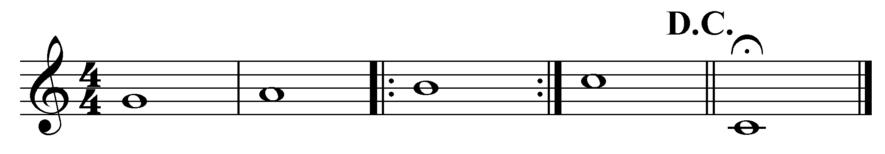

Patrick Bet-David’s operational epistemology, as articulated in his book on “the five moves,” is a grammar of lists—structured, linear, and action-oriented. Yet, its lack of prosody—rhythm, melody, recursion—limits its capacity to generalize across domains. This essay addresses this knowledge gap by metabolizing Bet-David’s grammar into a scalable, fractal framework that sings with prosodic depth. Drawing on cingulo-insular salience detection, neuro-symbolic processing, and the metaphor of IM swimming, we propose a five-layer topology that compresses his operationality into a recursive epistemology, bridging Dionysian energy and Apollonian structure.[1]
Bet-David’s “five moves” and “seven steps” are mind-numbing yet effective, reflecting a cingulo-insular approach to salience: highlight, triage, move. However, their linear, non-recursive nature lacks the plasticity of idiomatic expression, which thrives on rhythm and recursion. This gap—between operational grammar and prosodic richness—motivates our fractal metabolism, which preserves Bet-David’s structure while layering mythic, scalable meaning.[2]
Scaling = fractal (definition; self-similar at different, logarithmic scales; meaning the fractal is the ultimate compression). We digest Bet-David’s lists into a fractal grammar that scales across domains—past, present, predicted. This epistemology is not a checklist but a recursive stage, where salience pipelines are transformed into prosodic loops, echoing Theseus watching the rude mechanicals: form preserved, myth layered.[3]

Caption: Fractal graph visualizing a key missing ingredient in Bet-David’s epistemology: fractal, recursive, inherently scaling motifs. This prosody is best symbolized by da capo. Source: Ukubona Epistemic Archive.